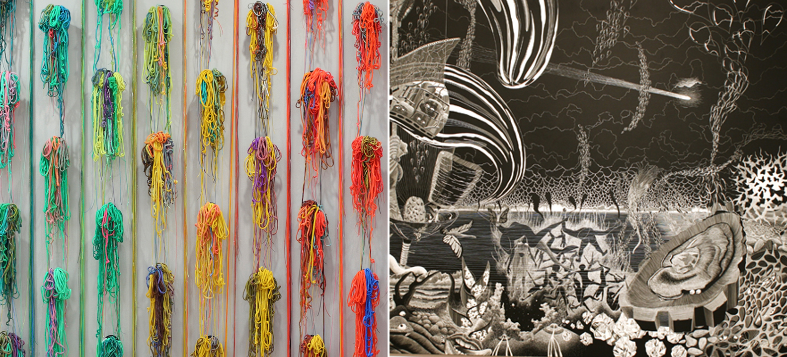

2010 Exhibitions
2011 Exhibitons
Future Exhibitions
Artists
September 7-21, 2012
Cut and Glitter Gallery I
Shay Culligan Gallery II
July 28-August 4, 2012
(Closed Thursday Aug 2, 2012)
Keep Warm by Firefly
June 29 - July 20 2012
Jackie Reeves Gallery I
Encaustic Painters Gallery II
Transition Gallery
June 1 - 22 2012
Erica Licea-Kane Gallery I
Jodi Colella Gallery II
May 4 - 25 2012
Ken Hruby Gallery I
Deborah Davidson Gallery II
April 6 - 27 2012
Al Jaeger Gallery I
Natacha Sochat Gallery II
March 28-31 2012
MassArt Printmakers 2012

March 2-22 2012
Catherine Evans Gallery I
John Monteiro Gallery II
February 3-24 2012
Agglomeration Gallery I
Plastic Erotica Gallery II
January 6-21 2012
NKG National Juried 2012